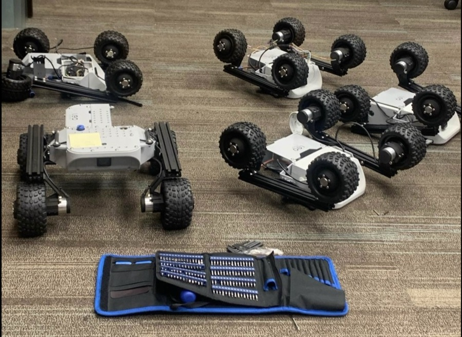

Rover AirTag: person-following robot
Programmed a four-wheel rover to autonomously follow a person in real time using AirTag-based localization, building out the tracking and motion-control loop end to end on real hardware.
HardwareRaspberry Pi 4